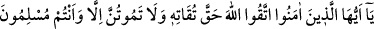
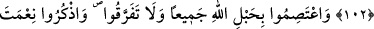
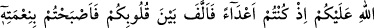
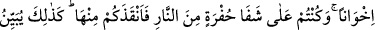
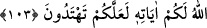
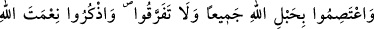
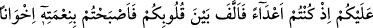
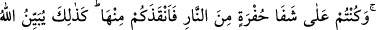

MÜSLÜMAN OLARAK
CAN VERMEK
102. Ey îman edenler! Allah’dan, O’na yaraşır şekilde korkun ve ancak
müslümanlar olarak can verin.
103. Hep birlikte Allah’ın ipine (İslâm’a) sımsıkı yapışın; parçalanmayın. Allah’ın
size olan nîmetini hatırlayın: Hani siz birbirinize düşman kişiler idiniz de O,
gönüllerinizi birleştirmişti ve O’nun nîmeti sâyesinde kardeş kimseler olmuştunuz.
Yine siz bir ateş çukurunun tam kenarında iken oradan da sizi O kurtarmıştı. İşte
Allah size âyetlerini böyle açıklar ki doğru yolu bulasınız.
“Ey inananlar! Allah’dan ona yaraşır biçimde”; yani hakiki bir takvâ ile ve bu
takvânın gereklerine göre “ korkun.”
Bu emir, vacibleri îfâ edip haramlardan kaçınma vb. konularda kişiyi bütün gücünü
sarfetmek üzere mükellef tutmaktadır. Yani, “Allah’dan gücünüz yettiği kadar korkun.”
Takvâda o kadar ileri gidin ki, gücünüzün yettiği hiçbir konuda takvâya aykırı
davranmayın.
“Ve ancak müslümanlar olarak ölün.” Nefislerinize Allah’dan başkasını kesinlikle
ortak etmeden nefislerinizi sadece O’na kul edin. Yani, Allah’a boyun eğişinizi tam
olarak gerçekleştirmiş ve bu hâl üzere sebât bulmuş olmanın dışında hiçbir hâl ve
durum üzerine kesinlikle ölmeyin. Bu ifade, her ne kadar zâhiren böyle bir hâlin
dışındaki bir şekilde ölmeyi yasaklamakta ise de gerçekte maksat; İslâm üzere yaşamaya
devam etmeleridir.